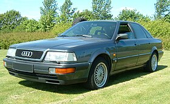
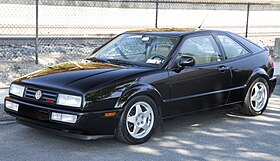

Shop Classic Cars

Audi V8 VF
A luxury sedan blending performance and comfort. Experience the power of a V8 engine with all-wheel drive for superior handling.
View Details.36+-
BMW Z1
An innovative roadster with sleek design and advanced engineering. The BMW Z1 redefines driving pleasure with its futuristic doors.
View Details

Volkswagen Corrado
A sporty hatchback designed for driving enthusiasts. The Corrado combines German precision with cutting-edge technology.
View Details